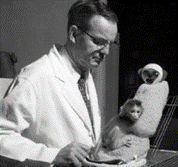
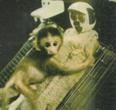

할로우의 원숭이 실험
1950~1960년대 미국 심리학자 해리 할로우(Harry Harlow)는 당시 심리학계에서 널리 수용되던 행동주의적 관점에 근본적인 의문을 제기하였다. 당시 주류 이론은 영아의 애착이 주로 수유와 같은 생리적 욕구의 충족에 의해 형성된다고 보았다. 이러한 관점에 따르면 아기가 양육자에게 애착을 갖는 가장 큰 이유는 먹이를 제공받기 때문이며, 애착은 음식 공급이라는 강화 요인에 의해 유지된다고 해석되었다.
그러나 할로우는 이러한 설명이 인간과 동물의 정서적 발달을 충분히 설명하지 못한다고 판단했다. 그는 관찰과 경험을 통해 애착의 본질이 단순한 먹이 제공이 아니라 정서적 안정감과 신체적 접촉의 편안함(contact comfort)에 있다고 가정하였다. 즉, 아동과 동물 모두 생존을 위한 물리적 자원만이 아니라, 심리적 안전과 감각적 안정이 발달 과정에서 핵심 역할을 한다고 보았다. 이를 검증하기 위해 그는 레서스 원숭이 유아를 대상으로 장기간의 체계적이고 통제된 실험을 설계하였다.

2. 실험방법
할로우는 태어난 지 수일 이내의 레서스 원숭이를 어미로부터 분리하여 인공 양육 환경에서 성장시키는 방법을 사용하였다. 실험 환경에는 두 종류의 대리모(surrogate mother)를 배치하였다.
1) 철사 대리모: 금속 철사로 만든 인형으로, 우유병이 부착되어 있어 먹이를 제공할 수 있도록 제작되었다. 표면이 차갑고 단단하여 신체 접촉 시 감각적 편안함은 제공하지 못한다.
2) 천 대리모: 철사 골격 위에 부드러운 천을 감싸 포근하고 따뜻한 표면을 제공하였으나, 먹이는 제공하지 않았다.
원숭이들은 두 대리모가 있는 우리 안에서 자유롭게 움직이며, 배가 고플 때는 반드시 철사 대리모에게 가야 했다. 그러나 연구의 초점은 먹이 섭취 상황 외에 원숭이가 어떤 대리모를 선택하는가를 관찰하는 것이었다. 할로우는 실험의 신뢰성을 높이기 위해 다양한 상황을 설정하였다.
1) 공포 유발 상황: 낯선 물체(움직이는 장난감, 큰 소리를 내는 기계)를 우리 안에 넣어 위협을 가한 뒤, 원숭이가 어느 대리모에게 접근하는지를 기록했다.
2) 분리-재회 실험: 원숭이를 대리모와 완전히 떨어뜨려 일정 시간 격리한 후 재회 시 행동 변화를 관찰하였다.
3) 위치 변경 실험: 두 대리모의 위치를 바꾸거나 한쪽에만 배치하여 원숭이의 선택 행동이 환경 변화에도 일관되는지 검증하였다.
4) 장기 관찰: 유아기 이후까지 지속 관찰하여 초기 대리모 경험이 사회적·정서적 행동에 미치는 장기적 영향을 살폈다.
이러한 세밀한 설계는 접촉의 편안함이 먹이 제공보다 애착 형성에 더 강력한 영향을 미치는지를 검증하고, 애착의 심리·생리적 기제를 보다 명확히 밝히는 데 목적이 있었다.

3. 결과
관찰 결과, 원숭이들은 배가 고플 때만 철사 대리모에게 접근하여 우유를 먹었고, 그 외의 대부분 시간은 먹이를 제공하지 않는 천 대리모와 함께 있었다. 특히 위협 자극이 주어졌을 때, 원숭이들은 천 대리모에게 재빨리 달려가 안기며 안정감을 찾았다. 이러한 행동 패턴은 대리모의 위치를 바꾸어도 변하지 않았으며, 이는 촉각적·정서적 안정감이 먹이 제공보다 애착 형성에 더 핵심적인 요인임을 보여주었다.
장기적으로, 철사 대리모와만 양육된 원숭이들은 사회성이 떨어지고, 또래와의 상호작용에 어려움을 보였으며, 성체가 되었을 때 번식 행동과 양육 행동에도 결함을 나타냈다. 반면, 천 대리모와 접촉한 경험이 있는 원숭이들은 상대적으로 더 안정된 행동 패턴을 보였다.
4. 시사점
할로우의 원숭이 실험은 애착의 본질이 정서적 유대와 신체적 접촉에 있다는 점을 실증적으로 입증하였다. 이는 당시 행동주의가 강조하던 ‘먹이 제공 = 애착 형성’이라는 단순한 공식의 한계를 극복하고, 애착이 감각적·정서적 요소에 의해 형성되고 유지된다는 새로운 관점을 제시하였다. 이 연구는 보울비(John Bowlby)의 애착이론과도 밀접하게 연결되며, 현대 발달심리학과 아동상담, 교육, 보육 정책에 깊은 영향을 주었다.
1) 발달심리적 시사점: 생애 초기 안정적 신체 접촉과 정서 교류는 사회성, 정서조절 능력, 대인관계 형성에 장기적인 긍정적 영향을 준다.
2) 교육·상담적 시사점: 아동 발달에서 단순한 물질적 지원을 넘어 지속적인 정서적 지지와 신체적 온기가 필수적이다.
3) 사회·정책적 시사점: 보육원·위탁가정·입양아동 등 초기 양육 환경이 결핍된 아동에 대한 정서적 보완 프로그램이 필요하다.
결국 할로우의 실험은 “애착은 사랑과 접촉에서 자란다”는 메시지를 실험적으로 뒷받침하며, 발달과 교육 현장에서 따뜻한 접촉과 일관된 정서 교류가 발달의 핵심 조건임을 확인시켜주는 중요한 사례로 남았다.
참고문헌
Harlow, H. F., & Zimmermann, R. R. (1959). Affectional responses in the infant monkey. Science, 130(3373), 421–432.
Harlow, H. F., & Suomi, S. J. (1970). Nature of love—Simplified. American Psychologist, 25(2), 161–168.
박성철, 김광웅 (2016). 『발달심리학』. 서울: 학지사.
이현림, 이순형 (2018). 『애착과 인간발달』. 서울: 학지사.
2025.08.12 - [이론] - 보울비의 애착은 주 양육자와 정서적 안전기반의 중요성